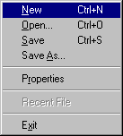
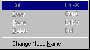
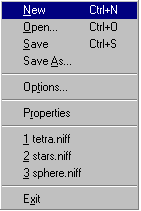
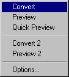

The NIFF Editor main menu is displayed at the top of the NIFF Editor window:

When a menu item is selected, the following sub menus are displayed:
| File menu | Edit menu | View menu | Tools menu | Help menu |
|  |  |  |  |  |
The following commands are available in the [File] menu:
| [New file] | Create a new NIFF file. |
| [Open...] | Open a NIFF file in NIFF Editor. Selecting this command opens the Open dialog box. In the Open dialog box, select a file from list provided, or input the name of a NIFF file to open. |
| [Save] | Saves the contents of the open file by overwriting a file with the same filename. |
| [Save As...] | Saves the contents of the open file to a file with the specified name. Selecting this command opens the File dialog box. In the File dialog box, select a file from the list provided, or save the file using a specified filename and/or location. |
| [Properties] | Displays the dialog box to view node names and flag information. |
| [Recent files] | Displays the names of the last 10 files opened in NIFF Editor. If no files have been opened since installing NIFF Editor, this box will be empty. |
| [Exit] | Exit NIFF Editor |
The following commands are available in the [Edit] menu:
| [Cut] | Cut a node and copy it to the clipboard. |
| [Copy] | Copy a node to the clipboard. |
| [Paste] | Paste a node that has been copied to the clipboard. |
| [Delete] | Delete the selected node. The node's links are deleted, and if no other nodes are linked to it, the node is also deleted. The (deleted) node's child nodes are then deleted, providing no nodes other than the parent node are linked to them. |
| [Change node name] | Change the name of the displayed node. To change the node name, edit the node name in the dialog box. To specify a new name for a node that is not linked to the Node name for ... text box, delete "Unknown" and input the desired name. Conversely, to delete a node name, delete the name that is displayed. The ASCII characters "!" (0x21)through (0x7e) can be used for node names. Please note that node names cannot contain spaces or Japanese characters. |
The following commands are available in the [View] menu:
| [Tool bar] | Show/hide the status bar |
| [Tool bar] | Show/hide the status bar |
| [Split] | Divide the NIFF Editor window into halves. Selecting this item moves the mouse cursor to the the top of the split bar. Move the split bar to the right or left side of the window to divide the screen. |
| [Large icons] | Show large icons in the display list on the right side of the NIFF Editor window. |
| [Small icons] | Show small icons in the display list on the right side of the NIFF Editor window. |
| [List] | Display filenames in the display list on the left side of the NIFF Editor window. |
| [Details] | Display details about the files in the display list on the left side of the NIFF Editor window. |
The following commands are available in the [Tools] menu:
| [Convert] | Convert the open NIFF file to a display list. |
| [Preview] | Convert and compile the open NIFF file and send the converted file to IS-VIEWER64 for previewing. |
| [Quick Preview] | Send the open NIFF file to IS-VIEWER64 for previewing without compiling. |
| [Convert 2] | Convert the loaded NIFF file to an NVF file. |
| [Preview 2] | Convert the loaded NIFF file to a binary file, then load into IS-Viewer64 to preview it. |
| [Options...] | Specify the filenames of the files used during converting and previewing. |
The following commands are available in the [Help] menu:
| [Topic search] | Display NIFF Editor Help. NIFF Editor Help files are in HTML format. Selecting this command opens a browser and displays NIFF Help. |
| [Online support] | Please contact the NOA Engineering Developer Support Group for questions regarding NIFFEditor or visit our new website at http://www.noa-engineering.com for the latest NIFF updates. |
| [Version Info...] | Displays NIFF Editor version information. |